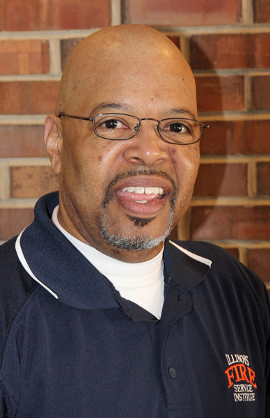
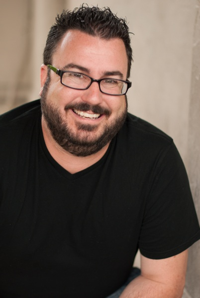

Speakers
2017 Keynote Speakers
Keith "Doc" Patterson
Keith "Doc" Patterson is a motivational speaker and entertainer known for his interactive lectures. He is a 1975 graduate of Monmouth High School (now Monmouth-Roseville High School,) where he was the first male drum major in the school's history and participated actively in the National Honor Society.
He also holds a degree in Fire Science and Fire Prevention and has over forty years of experience in the American Fire Service. Doc currently is a member of the Field Staff for the Illinois Fire Service Institute, where he focuses on leadership development. He has earned the honor of Fire Chaplain and Drill Instructor of the Lake County and Southeast Iowa Honor Guards.
Doc has earned many honors such as an Illinois Honorary FFA Degree, an Illinois 4-H Alumni Award, and has appeared on television shows such as Rescue 911, Chicago Fire, A&E Investigative Reports with Bill Kurtis, and has also appeared on the Hallmark Channel.
PK Creedon
PK is an Illinois Native, as he attended Lincoln Way North High School in Frankfort, IL. He studied International Business and Marketing at the University of Tampa. Soon after college, he moved to West Virginia to represent the United Way at high profile events for the National Football League. Just recently, PK moved to the greater Los Angeles area, where he works in marketing as a social media strategist and digital marketing consultant. In his free time, PK enjoys making videos for his popular YouTube channel.
Pete Mockaitis
See below
2016 Keynote Speakers
Chris Bowers
Chris Bowers' life is dedicated to the positive influence and motivation of students through his sense of humor. He is a dynamic storyteller and his hilarious tales serve to emphasize the lessons he is trying to convey.
Chris has appeared as the keynote speaker for Student Council, Key Club, HOBY, BPA, FBLA, DECCA, 4-H, FCCLA, PRIDE and Student Journalism state conferences. He was also accepted as one of only 48 speakers in the prestigous Jostens Speakers Bureau. He has spoken in 34 states and reaches thousands of high school and middle school students a year.
Chris speaks to audiences about the power they have to take risks and to have confidence in themselves. He uses humor to build camaraderie with students so he can encourage them to overcome their fear of failure and fear of what others think of them. He emphasizes positive ways of dealing with frustration and conflict resolution. Audiences find themselves laughing along as he tells his own personal stories to get his points across. His presenations are dynamic and his enthusiasm is contagious.
Pete Mockaitis
Pete is a trainer and coach who has served clients in 50 countries. Pete's work has enchanced Fortune 100 corporations, high-growth startups, major nonprofits, and dozens of universities. Having led nine student organizations, he believes students make tremendous impact right now. This convicition led him to write The Student Leader's Field Guide while in college.
He hosts the How to be Awesome At Your Job podcast, which consistently ranks among the top 10 careers podcasts on iTunes. Pete began his "real-world" career at Bain & Company, a firm CNN has called "the elite in the already elite field of management consultants." But most importantly, Pete was a HOBY ILCS alum in 2000 and HOBY Daddy (Leadership Seminar Chair) in 2009 and 2010!